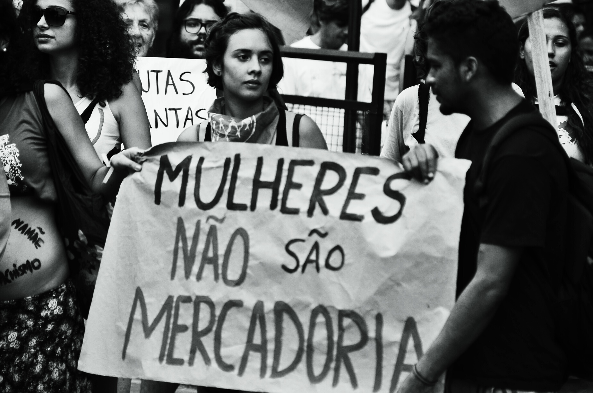
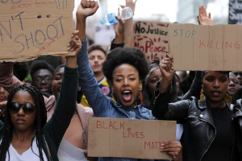

Petições
Assinando as petições abaixo e realizando doações para estas campanhas você consegue ajudar sem ao menos sair de casa

Feminismo
Direitos das mulheres

Assinando as petições abaixo e realizando doações para estas campanhas você consegue ajudar sem ao menos sair de casa
O que são as ODS?
Os Objetivos de Desenvolvimento Sustentável (ODS) (ou Objetivos Globais para o Desenvolvimento Sustentável) são uma coleção de 17 metas globais, estabelecidas pela Assembleia Geral das Nações Unidas. As ODS são parte da Resolução 70/1 da Assembleia Geral das Nações Unidas: "Transformando o nosso mundo: a Agenda 2030 para o Desenvolvimento Sustentável", que depois foi encurtado para Agenda 2030.
As metas são amplas e interdependentes, mas cada uma tem uma lista separada de metas a serem alcançadas. Atingir todos os 169 alvos indicaria a realização de todos os 17 objetivos. Os ODS abrangem questões de desenvolvimento social e econômico, incluindo pobreza, fome, saúde, educação, aquecimento global, igualdade de gênero, água, saneamento, energia, urbanização, meio ambiente e justiça social.
Desigualdades no Brasil
Justiça
No Brasil, é garantia constitucional porém, nossa estrutura jurídica não dá suporte para que toda a população que, normalmente, seria parte em uma lide, tenha acesso a tal na resolução de seus problemas, nem garante que todos os direitos expressos sejam efetivamente postos em prática.
Gênero
Um estudo feito pelo Instituto Brasileiro de Geografia e Estatística (IBGE) mostra que as mulheres ganham menos do que os homens em todas as ocupações selecionadas na pesquisa. Mesmo com uma queda na desigualdade salarial entre 2012 e 2018, as trabalhadoras ganham, em média, 20,5% menos que os homens no país.
Social
A desigualdade social no Brasil. De acordo com o estudo liberado pelo Instituto Brasileiro de Geografia e Estatística (IBGE), a concentração de renda aumentou em 2018 no país. Os dados mostram que o rendimento mensal dos 1% mais ricos do país é quase 34 vezes maior do que o rendimento da metade mais pobre da população
Racial
A PNAD Contínua de 2017 mostra que há forte desigualdade na renda média do trabalho: R$ 1.570 para negros, R$ 1.606 para pardos e R$ 2.814 para brancos. E de acordo com um estudo realizado, 75% das vítimas de homicídio no Brasil são negras